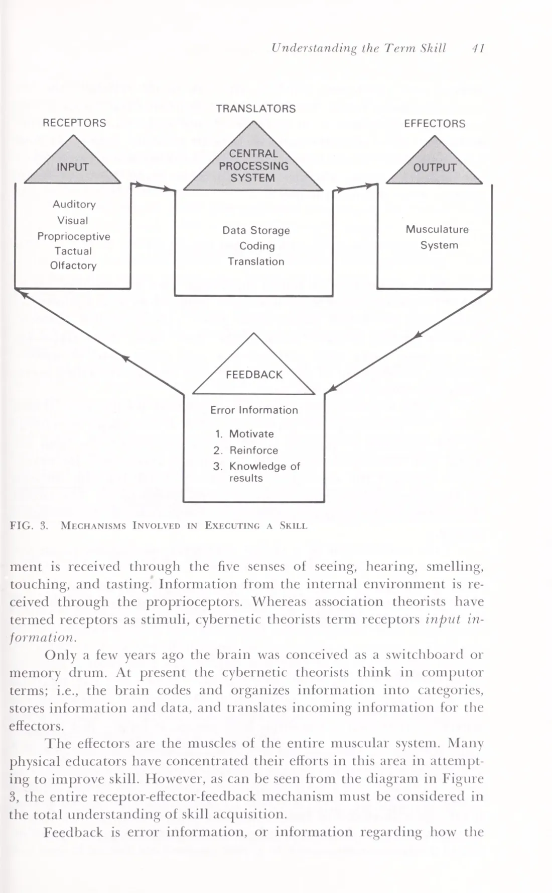

Chương 4: Hiểu về thuật ngữ Kỹ năng
Một trong những thuật ngữ được sử dụng phổ biến nhất trong giáo dục thể chất là từ kỹ năng (skill). Chúng ta nói về một người có kỹ năng, các kỹ năng cơ bản, kỹ năng tri giác, kỹ năng vận động (motor skills) và các đáp ứng có kỹ năng. Mỗi người trong chúng ta đều từng chứng kiến một vận động viên golf thực hiện cú gạt bóng vào lỗ, một cầu thủ bóng rổ ném bóng vào rổ, một vận động viên bơi lội lướt nhẹ nhàng trong nước qua hàng loạt động tác hoặc kiểu bơi, hay một vận động viên chạy vượt rào băng qua các chướng ngại vật trên đường chạy một cách uyển chuyển. Khi theo dõi những màn trình diễn như vậy, hẳn chúng ta đã trầm trồ trước trình độ kỹ năng cao mà vận động viên thể hiện, nhưng thực chất chúng ta hiểu kỹ năng là gì? Mỗi người đều gán những định nghĩa và sắc thái nghĩa riêng của mình cho thuật ngữ này. Trong một số trường hợp, từ này và các biến thể của nó được dùng như thể mọi người đều đồng thuận về định nghĩa. Tuy nhiên, từ kỹ năng có rất nhiều định nghĩa và cách sử dụng khác nhau.
Các định nghĩa về kỹ năng
Kỹ năng có thể được định nghĩa từ hai góc độ. Một góc độ bao gồm các định nghĩa theo quan điểm mô tả (descriptive perspective), góc độ kia bao gồm các định nghĩa theo quan điểm vận hành (operational perspective).
Các định nghĩa mô tả mang tính định hướng mục tiêu và xác nhận việc hoàn thành các nhiệm vụ cụ thể. Chúng tập trung vào việc mô tả cách một cá nhân hành xử trong khi đạt được một mục tiêu xác định. Nói một cách ngắn gọn, các định nghĩa mô tả đặt câu hỏi: “Mục tiêu đã đạt được như thế nào?”
Các định nghĩa vận hành đề cập đến các cơ chế và phẩm chất của một hành động có kỹ năng. Chúng xem xét sự tạo khuôn mẫu theo thời gian và không gian của các cơ chế tham gia vào việc thực hiện một chuyển động có kỹ năng. Hệ thuật ngữ của lý thuyết điều khiển học (cybernetics) đặc biệt hữu ích trong việc đi đến một định nghĩa vận hành về kỹ năng, bởi vì các năng lực và giới hạn của cơ chế cơ quan thụ cảm – cơ quan thực thi – phản hồi (receptor-effector-feedback) được xem xét kỹ lưỡng, cũng như toàn bộ hành vi tổ chức của con người.
Định nghĩa mô tả
Các nhà giáo dục thể chất có thói quen định nghĩa kỹ năng theo quan điểm mô tả bởi vì các kỹ năng trong giáo dục thể chất thường được giảng dạy bằng cách mô tả việc cần làm, cách thức thực hiện và kết quả mà người thực hiện cần hướng tới. Knapp (1963) đã sử dụng một định nghĩa mô tả về kỹ năng khi bà chỉ ra rằng kỹ năng là thứ được học, và nó biểu thị khả năng mang lại các kết quả đã định trước với độ chắc chắn tối đa. Bà cũng đề cập rằng có sự tiêu tốn thời gian và năng lượng ở mức tối thiểu khi thực hiện một kỹ năng. Cratty (1964) phát biểu rằng một kỹ năng vận động có thể được gọi là một màn thực hiện vận động tương đối phức tạp. Việc đã lĩnh hội được kỹ năng biểu thị rằng một quá trình học tập nào đó đã diễn ra và kết quả là hành vi trở nên mượt mà hoặc được tích hợp hơn.
Theo quan điểm mô tả rộng rãi, kỹ năng là việc hoàn thành một nhiệm vụ một cách dễ dàng và chính xác. Mặc dù nhiệm vụ có thể mang tính thể chất hoặc tinh thần, người ta thường nghĩ đến kỹ năng như một dạng thành thạo về thao tác. Một chuyển động có kỹ năng là chuyển động trong đó một mục tiêu đã định trước được hoàn thành với hiệu suất tối đa và mức tiêu hao năng lượng tối thiểu. Một chuyển động khéo léo không tự nhiên xảy ra. Phải có nỗ lực có ý thức và sự luyện tập có mục đích từ phía người thực hiện để có thể thực hiện một kỹ năng.
Các định nghĩa mô tả nhấn mạnh một điểm quan trọng: việc thực hiện kỹ năng có được là thông qua học tập. Các năng lực của một cá nhân có thể hỗ trợ người đó trong việc thực hiện kỹ năng. Tuy nhiên, việc tổ chức các khuôn mẫu chuyển động mới là kết quả của quá trình học tập. Các định nghĩa mô tả thường nhấn mạnh rằng kỹ năng là một chuyển động tự chủ liên quan đến sự phối hợp của các cơ bắp trong việc thực hiện một hành động có mục đích.
Một định nghĩa mô tả về kỹ năng thiếu sự chính xác và dường như chỉ tập trung vào bằng chứng thực nghiệm về sự hiện diện hay vắng mặt của nó. Một điều cũng đáng quan ngại không kém là mức độ kỹ năng đạt được phần lớn dựa trên sự phán đoán chủ quan.
Định nghĩa vận hành
Một định nghĩa vận hành về kỹ năng rất hữu ích để hiểu đầy đủ hơn về toàn bộ hành động học và thực hiện một chuyển động. Bất kỳ nỗ lực nào nhằm định nghĩa một hành động có kỹ năng theo các thuật ngữ vận hành đều đòi hỏi phải xem xét các cơ chế có liên quan.
Trong một trong những định nghĩa vận hành đầy đủ nhất về kỹ năng, Fitts đã định nghĩa một đáp ứng có kỹ năng là:
một đáp ứng trong đó các quá trình cơ quan thụ cảm – cơ quan thực thi – phản hồi được tổ chức ở mức độ cao, cả về mặt không gian lẫn thời gian. Vấn đề cốt lõi đối với việc nghiên cứu kỹ năng là sự tổ chức hay tạo khuôn mẫu như vậy diễn ra hoặc hình thành như thế nào.1
Phát biểu này của Fitts cung cấp một manh mối về tính hữu ích của một định nghĩa vận hành về kỹ năng. Sự tương tác qua lại của các cơ chế cơ quan thụ cảm – cơ quan thực thi – phản hồi và các tính đồng nhất trong việc tạo khuôn mẫu hay trình tự các hoạt động là những quá trình quan trọng cần nghiên cứu. Khi thực hiện một hành động có kỹ năng trong thể thao, người thực hiện tích hợp thành công trình tự các hành động và liên tục sử dụng cũng như chuyển dịch thông tin từ các giác quan đến các cơ quan thực thi (effectors). Tổ chức không gian – thời gian cũng đạt hiệu quả cao. Chẳng hạn, cầu thủ ném bóng (quarterback) trong bóng bầu dục Mỹ sử dụng thông tin từ môi trường, huy động dữ liệu quá khứ và chuyển dịch dữ liệu đầu vào để thực hiện một đường chuyền thành công. Anh ta cũng sử dụng phản hồi (feedback) và tổ chức hiệu quả trình tự các hoạt động. Trong trường hợp này, hành động có kỹ năng đòi hỏi nhận thức không gian cũng như tổ chức thời gian để có một màn thực hiện tốt.
Nếu chấp nhận định nghĩa vận hành của Fitts, thuật ngữ kỹ năng cho thấy tầm quan trọng của các phẩm chất tri giác, đầu vào cảm giác và hành động của cơ quan thực thi. Liên quan đến việc nhấn mạnh sai lệch vào các nhóm cơ vốn bị ngụ ý bởi nhãn gọi “kỹ năng vận động”, Fitts nhận xét:
Vấn đề nhóm cơ nào tham gia vào một chuỗi hành vi cụ thể hoàn toàn mang tính thứ yếu và chắc chắn không quan trọng hơn câu hỏi các phần tử võng mạc nào hay các phân đoạn màng nền nào tham gia vào việc phát hiện một khuôn mẫu kích thích.2
Các cơ chế của một hành động kỹ năng
Định nghĩa vận hành của Fitts nhấn mạnh các cơ chế tham gia vào các màn thực hiện có kỹ năng. Hình 3 trình bày sơ đồ các cơ chế của các quá trình cơ quan thụ cảm – cơ quan thực thi – phản hồi.

Cũng được thể hiện trong Hình 3 là hệ thống xử lý trung tâm (central processing system), nơi xử lý thông tin từ môi trường bên ngoài và bên trong, tức là các cơ quan thụ cảm (receptors). Các cơ quan thụ cảm gồm các giác quan thính giác, thị giác, khứu giác, xúc giác và cơ quan cảm thụ bản thể (proprioceptors). Thông tin từ môi trường bên ngoài được tiếp nhận qua năm giác quan: nhìn, nghe, ngửi, chạm và nếm. Thông tin từ môi trường bên trong được tiếp nhận qua các cơ quan cảm thụ bản thể. Trong khi các nhà lý thuyết liên tưởng gọi các cơ quan thụ cảm là tác nhân kích thích (stimuli), các nhà lý thuyết điều khiển học gọi các cơ quan thụ cảm là thông tin đầu vào (input information).
Chỉ vài năm trước, não bộ được hình dung như một tổng đài điện thoại hoặc một trống ghi nhớ. Hiện nay, các nhà lý thuyết điều khiển học tư duy theo thuật ngữ máy tính; nghĩa là não bộ mã hóa và tổ chức thông tin thành các phạm trù, lưu trữ thông tin và dữ liệu, đồng thời chuyển dịch thông tin đầu vào cho các cơ quan thực thi.
Các cơ quan thực thi là các cơ bắp của toàn bộ hệ cơ. Nhiều nhà giáo dục thể chất đã tập trung nỗ lực vào lĩnh vực này nhằm cố gắng cải thiện kỹ năng. Tuy nhiên, như có thể thấy từ sơ đồ ở Hình 3, toàn bộ cơ chế cơ quan thụ cảm – cơ quan thực thi – phản hồi phải được xem xét trong sự thấu hiểu tổng thể về quá trình tiếp nhận kỹ năng (skill acquisition).
Phản hồi là thông tin sai lệch (error information), hay thông tin về cách các cơ quan thực thi đã hoạt động như thế nào, được gửi trở lại các cơ quan thụ cảm và hệ thống xử lý trung tâm. Theo Fitts và Posner (1967), phản hồi phục vụ ba chức năng: (1) tạo động lực, (2) thay đổi màn thực hiện tức thời, và (3) củng cố việc học. Để hiểu rõ hơn ba chức năng này, cần xem lại phần đề cập đến sự khác biệt giữa học tập và thực hiện (Chương 2). Phản hồi được thảo luận chi tiết hơn trong Chương 7.
Các đặc điểm của một hành động kỹ năng
Điều gì phân biệt một chuyển động có kỹ năng với một chuyển động chưa có kỹ năng? Người có xu hướng dùng thuật ngữ mô tả chắc chắn sẽ trả lời rằng người có kỹ năng trông rất đẹp mắt. Tuy nhiên, định nghĩa này khiến nhà giáo dục thể chất cổ vũ “tư thế chuẩn” (good form), hay nhấn mạnh vào việc một người trông như thế nào khi thực hiện kỹ năng thay vì tiến hành một cuộc điều tra thấu đáo về những phẩm chất phân biệt chuyển động có kỹ năng với chuyển động chưa có kỹ năng.
Như Fitts đã được trích dẫn ở trên, “vấn đề cốt lõi đối với việc nghiên cứu kỹ năng là sự tổ chức hay tạo khuôn mẫu như vậy diễn ra như thế nào.” Do đó, cần phải xem xét các đặc điểm hoặc phẩm chất phân biệt hành động có kỹ năng với hành động chưa có kỹ năng. Hai đặc điểm đặc biệt thích hợp để xem xét. Đặc điểm thứ nhất, tổ chức phân cấp (hierarchical organization) của việc học kỹ năng, bao gồm chương trình điều hành (executive program), các chương trình con (subroutines) và tổ chức nối tiếp (serial organization). Đặc điểm thứ hai là sự tạo khuôn mẫu thời gian (temporal patterning) hay sự phối hợp của khuôn mẫu chuyển động.
Mỗi đặc điểm của một chuyển động có kỹ năng, khi đặt đối lập với một chuyển động chưa có kỹ năng, đều có thể được định nghĩa theo các thuật ngữ vận hành. Việc hiểu rõ các phẩm chất của một hành động có kỹ năng đặc biệt quan trọng đối với nhà giáo dục thể chất – người phải thấu hiểu các vấn đề liên quan đến tiếp nhận kỹ năng – và đối với người học đang cố gắng trở nên thành thạo.
Tổ chức phân cấp
Như đã nêu trước đó, các nhà lý thuyết điều khiển học tin rằng sự kiểm soát hành vi của con người được tổ chức như một quá trình đa tầng bậc. Theo đó, một hành động có kỹ năng được học thông qua một tổ chức phân cấp và được tổ chức theo kiểu phân cấp. Một hành động chưa có kỹ năng thiếu loại hình tổ chức này.
Người ta có thể hình dung rõ nhất về thuật ngữ phân cấp (hierarchy) bằng cách nghĩ đến một sơ đồ tổ chức trong đó chủ tịch hội đồng điều hành đứng ở trên cùng, với các cán bộ của các đơn vị trực thuộc và các thành viên ở các cấp thấp hơn. Chủ tịch và hội đồng điều hành chỉ đạo và ủy thác trách nhiệm cho các đơn vị cấp dưới.
Miller, Galanter và Pribram (1960) đã sử dụng thuật ngữ Kế hoạch (Plan) để ngụ ý bản chất phân cấp của tổ chức hành vi. Một Kế hoạch, theo định nghĩa của Miller và cộng sự, là “quá trình mà qua đó tổ chức kiểm soát thứ tự thực hiện một chuỗi các thao tác.”3 Khái niệm về tổ chức phân cấp của hành vi dựa trên giả định rằng mọi hành động có kỹ năng phải được xem xét trong mối liên hệ với một mục đích hoặc kế hoạch, cũng như với quá trình thực hiện thực tế.
Bryan và Harter (1899) là những người đầu tiên đưa ra bằng chứng về bản chất phân cấp của một hành động có kỹ năng. Họ đã tiến hành một thí nghiệm về việc học hệ thống mã hóa phức tạp của mã Morse. Họ quan sát thấy rằng các đối tượng thí nghiệm của mình sử dụng sự kiểm soát có ý thức khi học từng mã riêng lẻ trong những giai đoạn đầu của quá trình học. Ở các giai đoạn tiếp nhận kỹ năng đánh điện tín sau đó, các đối tượng đã có thể gộp các mã hoặc chữ cái lại với nhau. Cuối cùng, hành động gửi một thông điệp phần lớn trở nên tự động. Như vậy, các đối tượng đã có một kế hoạch. Khi kế hoạch được hoàn thành, một số hành động nhất định đã được ủy thác xuống các cấp độ thấp hơn.
Học viên đang học một kỹ năng phải xử lý nhiều chuyển động hoặc phân đoạn phức tạp. Một số khuôn mẫu chuyển động có thể đã được tiếp nhận thông qua kinh nghiệm và luyện tập trước đó và có thể đã được ủy thác xuống một cấp độ thấp hơn. Bất kỳ chuyển động mới hoặc sự kết hợp chuyển động mới nào cũng sẽ đòi hỏi sự chú ý của hệ thống xử lý trung tâm, tức là các cấp độ cao hơn. Trong quá trình học một nhiệm vụ có kỹ năng, nhiều phân đoạn khác nhau của nhiệm vụ phải trở nên tự động và được ủy thác cho một trung tâm cấp thấp hơn. Một khi các phân đoạn nhất định của nhiệm vụ có thể được xử lý ở các cấp độ thấp hơn, hệ thống xử lý trung tâm sẽ được giải phóng để giải quyết các yêu cầu bổ sung của nhiệm vụ.
Chương trình điều hành và các chương trình con
Thay vì dùng thuật ngữ Kế hoạch như Miller và cộng sự đề xuất, các thuật ngữ chương trình điều hành (executive program) và chương trình con (subroutines) sẽ được sử dụng ở đây để giúp hiểu rõ hơn về tổ chức phân cấp của kỹ năng. Chương trình điều hành là mục đích hoặc kế hoạch tổng thể của hành động, trong khi các chương trình con là các đơn vị chuyển động mà sau khi được học thuần thục quá mức (overlearned), có thể được ủy thác xuống một cấp độ thấp hơn. Chúng là những chuyển động mà cuối cùng phần lớn trở nên tự động. Nói cách khác, một kỹ năng được chỉ đạo bởi một kế hoạch điều hành và các chương trình con nhất định tạo thành những khuôn mẫu chuyển động mà qua đó kế hoạch điều hành được thực hiện.
Các chương trình điều hành có thể được phân biệt rõ hơn bằng cách định nghĩa phương thức hoạt động của chúng. Các chương trình điều hành có khả năng làm gì? Điều gì phân biệt một chương trình điều hành với một chương trình con? Các kế hoạch điều hành thực hiện các chức năng sau: (1) chúng cung cấp một logic tổng thể hoặc định hướng cho chuyển động có kỹ năng; (2) chúng sắp xếp thứ tự thực hiện các chương trình con nhất định; (3) chúng đưa ra các quyết định và điều chỉnh, đồng thời có bản chất khá linh hoạt; và (4) chúng đóng vai trò như một mục tiêu, mục đích hoặc đích đến.
Các chương trình con có thể được coi là những phần, hoặc những đơn vị ít nhiều tách biệt của toàn bộ chương trình điều hành. Thay vì linh hoạt và có khả năng thích ứng, các chương trình con mang tính cố định và vận hành một cách tự động ngay khi trình tự đã được thiết lập. Chúng thể hiện những đặc tính cho phép chúng được lặp đi lặp lại hết lần này đến lần khác trừ khi bị gián đoạn hoặc thay đổi bởi kế hoạch điều hành.
Một minh họa cho một loại chương trình điều hành là kiểu bơi trườn sấp (crawl stroke) trong bơi lội. Chương trình tổng thể bao gồm các chương trình con là động tác đạp chân, quạt tay và thở. Hành động có kỹ năng hoàn chỉnh đòi hỏi một kế hoạch điều hành để sắp xếp thứ tự các chương trình con khác nhau, tức là việc thực hiện tuần tự và phối hợp những chương trình con phải hoạt động trong mối liên hệ với nhau.
Có một nguy cơ là minh họa về kiểu bơi trườn sấp ngụ ý rằng việc thực hiện một hành động có kỹ năng chỉ đơn thuần đòi hỏi việc nối chuỗi (chaining) hoạt động này với hoạt động tiếp theo. Sự tích hợp của các đơn vị hoặc chương trình con phức tạp hơn nhiều so với việc nối chuỗi như các nhà thuyết liên tưởng đề xuất. Như Lashley (1951) đã chỉ ra: “Thứ tự phải được áp đặt lên các yếu tố vận động từ một tổ chức nào đó chứ không phải từ các kết nối liên tưởng trực tiếp giữa chúng.”4
Kế hoạch điều hành thường phụ thuộc vào việc thực hiện nhiều chương trình con. Một kỹ năng lặp lại không bao giờ được thực hiện giống hệt nhau trong mỗi lần thực hiện. Thay vào đó, cùng một hiệu quả hoặc kế hoạch điều hành có thể đạt được theo nhiều cách. Tuy nhiên, người có kỹ năng đã thu hẹp phạm vi biến thiên xuống trong khuôn khổ các chương trình con mà người đó sử dụng để hoàn thành nhiệm vụ. Ngược lại, người mới bắt đầu hoặc người chưa có kỹ năng có xu hướng sử dụng độ biến thiên lớn hơn; và đôi khi sử dụng nhiều chương trình con hơn mức cần thiết. Không chỉ các chương trình con mà người đó lựa chọn có thể không phù hợp, mà còn có khả năng các chương trình con cần thiết không có sẵn trong kho tàng khuôn mẫu chuyển động của người mới học. Kết quả là người học có khả năng thất bại trong việc hoàn thành chương trình điều hành.
Sự tiếp nhận các chương trình con
Vì các chương trình con cực kỳ quan trọng trong việc thực hiện tổng thể một kỹ năng, câu hỏi đặt ra là: “Con người thu nhận các chương trình con hiệu quả bằng cách nào?” Fitts và Posner (1967) gợi ý rằng người lớn học các kỹ năng mới bằng cách tổ chức lại hoặc tái tạo khuôn mẫu các chương trình con sẵn có. Nếu điều này đúng, sự cần thiết của việc thiết lập một kho tàng các chương trình con trong thời thơ ấu là điều hiển nhiên. Việc tiếp xúc với đa dạng các trải nghiệm vận động trong những năm đầu đời cung cấp cho người trưởng thành đủ các chương trình con để lựa chọn khi phải đối mặt với một nhu cầu cụ thể hoặc một vấn đề thực hiện vận động. John Anderson (1958), chuyên gia uy tín về tăng trưởng và phát triển trẻ em, đã bày tỏ cùng quan điểm khi ông nói: “Người đang lớn lên xây dựng một chuỗi các kỹ năng, hết kỹ năng này đến kỹ năng khác. Các khuôn mẫu được xây dựng vào hệ thần kinh của người đó... một người trưởng thành là một tập hợp biết đi gồm nhiều kỹ năng luôn sẵn sàng hoạt động dù chỉ một vài trong số đó được sử dụng vào bất kỳ dịp cụ thể nào.”5
Các chương trình con có thể được hình dung như những chương trình điều hành “đã qua thời” (has-been). Việc thắt dây giày từng có lúc là một chương trình điều hành. Sau đó, nó trở thành một chương trình con vận hành tự động. Các chương trình con là những đơn vị hoặc khuôn mẫu chuyển động đã được chuyển xuống một cấp độ kiểm soát thấp hơn.
Nhiều cá nhân gặp trở ngại khi thực hiện một chuyển động có kỹ năng đơn giản vì họ không có một kho lưu trữ lớn các chương trình con để huy động, hoặc các chương trình con mà họ có không hiệu quả. Các kỹ năng cơ bản được tiếp nhận từ sớm trong đời. J. B. Nash đã thực hiện một khảo sát không chính thức về các hoạt động giải trí của các học viên cao học. Ông phát hiện ra rằng đại đa số lần đầu tiên trải nghiệm các kỹ năng của họ trước năm mười hai tuổi. Tiến sĩ Nash đã gọi giai đoạn từ tám đến mười hai tuổi là “những năm học kỹ năng” (skill-learning years).
Nếu một người trưởng thành có số lượng chương trình con hạn chế, người đó phải bù đắp cho sự thiếu hụt này. Nếu người đó không thể bù đắp và không thể tự rèn giũa để học các chương trình con mới, cơ hội thực hiện một chuyển động có kỹ năng của họ là cực kỳ thấp.
Có thể lấy một ví dụ từ môn khúc côn cầu trên cỏ (field hockey). Một người không thể trở thành cầu thủ khúc côn cầu trên cỏ giỏi nếu chương trình con chạy của người đó kém hiệu quả. Nếu cá nhân đó chạy khá tốt nhưng không nhanh lắm, họ có thể phù hợp với vị trí hậu vệ (fullback). Nếu kỹ năng chạy của họ cực kỳ kém, cá nhân đó nên chơi ở vị trí thủ môn (goalie), nơi chương trình con chạy không quá quan trọng.
Tổ chức các chương trình con
Việc thực hiện một hành động có kỹ năng mang tính chất nối tiếp (serial). Các chương trình con phải được thực hiện theo một trình tự cụ thể để hoàn thành chương trình điều hành. Chẳng hạn, cú đánh bóng golf phải được thực hiện theo một trình tự nối tiếp để có cú đánh thành công. Các chuyển động của bàn chân, hông, vai, cánh tay và cổ tay phải nối tiếp nhau. Nếu thứ tự chuyển động này bị thay đổi, hành động thường trông lúng túng và chuyển động thiếu phối hợp. Kết quả rất có thể sẽ không đạt yêu cầu. Tốt nhất thì kết quả cũng sẽ kém hiệu quả hơn so với khi chuyển động nối tiếp được thực hiện một cách thích hợp.
Annett và Kay (1956) gợi ý rằng người có kỹ năng có sự hiểu biết về trình tự các sự kiện, nghĩa là người đó hiểu tổ chức nối tiếp của nhiệm vụ cần thực hiện. Người chưa có kỹ năng thiếu sự hiểu biết này.
Bản chất nối tiếp của một chuyển động có kỹ năng có thể được phát hiện theo nhiều cách. Hầu hết các chuyển động đều có giai đoạn chuẩn bị (preparatory phase) cũng như giai đoạn thực hiện (execution phase). Woodworth (1938) đã sử dụng thuật ngữ “đơn vị vận động hai pha” (two-phase motor units) để nhấn mạnh các chuyển động đặc trưng của sự chuẩn bị và thực hiện. Ví dụ, trong động tác nhảy, người ta khuỵu gối (chuẩn bị) và bật duỗi (thực hiện). Giai đoạn chuẩn bị cũng có thể được coi là giai đoạn “tiền lập trình” (preprogram). Trong trường hợp nhảy, giai đoạn chuẩn bị có những lợi thế cơ học nhất định giúp đảm bảo màn thực hiện tốt hơn.
Cũng giống như có những sự chuẩn bị cần thiết phải hoàn thành trước khi chuỗi chương trình con có thể vận hành hiệu quả, một số người thực hiện lại hình thành những chuyển động chuẩn bị không cần thiết. Mặc dù một số chuyển động là không cần thiết và có thể gây bất lợi, chúng vẫn có thể trở thành những hành động chuẩn bị thiết yếu cho sự vận hành của chương trình con. Một ví dụ phổ biến là cầu thủ bóng rổ không thể ném rổ cho đến khi đã đập bóng xuống sàn. Một hành động tương tự tồn tại ở những người chơi golf tin rằng họ phải lắc nhẹ đầu gậy (waggle) trước khi bắt đầu vung gậy.
Việc tiền lập trình hoặc chuẩn bị cho việc thực hiện một kỹ năng thể thao rất quan trọng. Hầu hết các nhà giáo dục thể chất đều nhận thức được tầm quan trọng của việc “vào tư thế sẵn sàng” (getting set) để hành động. Những vận động viên có kỹ năng tốt đã học được sự cần thiết của giai đoạn này. Những người chơi chưa có kỹ năng thường thiếu sự tiền lập trình. Việc học và thực hiện giai đoạn chuẩn bị có thể hỗ trợ giai đoạn thực hiện, từ đó giúp người học tổ chức toàn bộ hành động theo trình tự nối tiếp.
Ý tưởng về tiền lập trình cũng chỉ ra sự cần thiết của việc một hành động có kỹ năng phải được “bắt đầu đúng cách”. Chỉ cần quan sát một vận động viên có kỹ năng, ta sẽ nhận thấy tầm quan trọng của việc khởi đầu chuỗi vận hành nối tiếp của hành động một cách chính xác. Ví dụ, vận động viên bowling luôn cố gắng bắt đầu bước chạy đà cho quả bóng đầu tiên ở cùng một vị trí. Anh ta cố gắng đứng cùng một khoảng cách tính từ vạch phạm lỗi nhằm sử dụng nhất quán cùng một kích thước bước chân trong lúc chạy đà. Nếu anh ta lỡ bước bước đầu tiên quá dài thay vì bước nửa bước ngắn như thường lệ, phần còn lại của trình tự thường bị sai lệch. Tuy nhiên, anh ta có thể thành công nếu biết bù trừ trong quá trình chạy đà cho cú khởi đầu sai lệch đó. Nếu vận động viên bowling không bù trừ, hành động sẽ thiếu kỹ năng và kém hiệu quả. Người tự học thường học phải trình tự sai lệch. Do đó, họ thường gặp nhiều khó khăn hơn trong việc học cách bù trừ và đòi hỏi khoảng thời gian dài hơn để học đúng kỹ năng.
Một kế hoạch điều hành tốt hoặc đúng đắn có thể hữu ích trong việc xác định trình tự của các chương trình con. Người mới bắt đầu sớm nhận ra rằng để phát triển kỹ năng, họ phải bắt đầu bằng một kế hoạch, và mỗi chương trình con phải được sắp xếp theo trình tự nhằm đạt được kế hoạch đó.
Các cá nhân khác nhau về khả năng tổ chức các chương trình con. Một số người dường như có khả năng sắp xếp các thành phần theo tính chất nối tiếp tốt hơn những người khác. Những cá nhân khác gặp khó khăn trong việc sắp xếp các chương trình con phù hợp và cần tham chiếu nhiều hơn đến kinh nghiệm quá khứ hoặc một loại đầu vào cảm giác khác để hỗ trợ họ tổ chức các chương trình con. Ba nguồn có thể tham gia vào việc tổ chức các chương trình con để chúng đi vào vận hành. Người học có thể phản ứng thuận lợi với (1) đầu vào cảm giác, (2) một kế hoạch điều hành, hoặc (3) việc học trước đó. Cách thức một hành động có kỹ năng được tổ chức có thể bị chi phối bởi các tín hiệu tức thời hay đầu vào cảm giác, hiểu biết về hình mẫu lý tưởng hoặc mục tiêu của hành động, và sự sẵn có của các chương trình con đã học trong quá khứ hoặc qua các trải nghiệm trước đó.
Một số giáo viên dạy kỹ năng thấy cần thiết phải giải thích, đưa ra các ví dụ mô tả và đặt câu hỏi nhằm giúp người học hoàn thành việc tổ chức vận hành các kỹ năng. Khi làm như vậy, các tín hiệu cảm giác tức thời cũng quan trọng ngang với việc giúp người học hiểu được mục đích hoặc kế hoạch tổng thể.
Một người thực hiện có kỹ năng biết trình tự các sự kiện cần thiết để thực hiện một chuyển động nhất định. Người đó cũng biết trân trọng giá trị của thông tin dư thừa (redundant information). Tính dư thừa (redundancy) ngụ ý các sự kiện có thể lặp lại và có khả năng nối tiếp nhau. Nghiên cứu của Annett và Kay (1956) đã chỉ ra nhận thức này ở những người thực hiện có kỹ năng. Người có kỹ năng cũng học cách phớt lờ các thông tin không liên quan. Một ví dụ về hành động dư thừa giúp giải thích phẩm chất này. Nếu bạn gọi món “bánh pie à la mode kèm kem lạnh” trong nhà hàng, bạn đang sử dụng một cụm từ dư thừa (vì à la mode đã có nghĩa là ăn kèm kem). Cô phục vụ “có kỹ năng” đã học cách phớt lờ thông tin dư thừa. Cô ấy hiểu “pie à la mode” và bỏ qua từ “kèm kem lạnh”. Cô ấy có thể đã bắt đầu ghi giá tiền hoặc đưa cho bạn bộ dao dĩa hay làm bất cứ việc gì tiếp theo trong chuỗi hành động mình thực hiện. Người thực hiện có kỹ năng biết cần hướng sự chú ý vào đâu và thông tin nào là không liên quan hoặc thừa thãi, cũng như cần chú ý đến những tín hiệu nào để thu được thông tin cần thiết cho việc thực hiện nhiệm vụ.
Tạo khuôn mẫu thời gian của kỹ năng
Tạo khuôn mẫu thời gian (temporal patterning), một phẩm chất khác của hành động có kỹ năng, dựa trên năng lực của người thực hiện trong việc tích hợp tổ chức nối tiếp của khuôn mẫu chuyển động. Tổ chức thời gian ngụ ý sự mượt mà trong việc kết nối các chương trình con kế tiếp nhau. Nó không có nghĩa là tốc độ thực hiện một chuyển động hay tổng thời gian cần thiết để hoàn thành một chuyển động. Thuật ngữ thời gian (temporal) trong ngữ cảnh này có nghĩa là độ dài thời gian hoặc khoảng thời gian giữa mỗi chương trình con kế tiếp nhau.
Người thực hiện càng thành thạo hoặc có kỹ năng, thời gian chuyển tiếp từ chương trình con này sang chương trình con khác càng ngắn và càng mượt mà. Người chưa có kỹ năng thường di chuyển một cách giật cục hoặc máy móc vì họ chưa làm chủ được sự căn chỉnh thời gian (timing) chính xác giữa từng chương trình con. Như Bartlett (1958) đã chỉ ra, một phẩm chất quan trọng của màn thực hiện có kỹ năng là người thực hiện dường như có “tất cả thời gian trên đời” để làm điều mình muốn. Nói cách khác, một màn thực hiện có kỹ năng trông có vẻ nhẹ nhàng không tốn sức, chủ yếu là nhờ sự uyển chuyển hay tính trôi chảy khi vận hành toàn bộ số lượng chương trình con cần thiết để thực hiện chương trình điều hành.
Nhịp độ (Pacing)
Khái niệm nhịp độ (pacing) có liên quan và ảnh hưởng lớn đến việc tạo khuôn mẫu thời gian. Nhịp độ được dùng trong ngữ cảnh này đề cập đến cách thức mà toàn bộ khuôn mẫu thời gian được điều tiết. Trong một số trường hợp, người thực hiện không có quyền kiểm soát đối với việc khởi phát khuôn mẫu chuyển động. Các yếu tố bên ngoài kiểm soát chuyển động ở một mức độ lớn. Ví dụ, trong một trận đấu bóng rổ, cầu thủ liên tục điều chỉnh và căn thời gian cho các bước di chuyển của mình trong mối tương quan với các tác nhân kích thích bên ngoài (các cầu thủ khác và quả bóng). Trong những trường hợp như vậy, các khuôn mẫu chuyển động mang tính nhịp độ bên ngoài (externally paced). Tương tự, một vận động viên quần vợt không nhất thiết kiểm soát được tốc độ của thông tin đi tới và do đó đang thực hiện một nhiệm vụ có nhịp độ bên ngoài. Chuỗi chuyển động của đối thủ và vị trí đánh bóng của đối thủ quyết định thời điểm khởi phát chuỗi chuyển động tiếp theo.
Ở các môn thể thao khác, việc khởi phát chuyển động mang tính tự điều nhịp (self-paced). Vận động viên thể dục dụng cụ thường thực hiện một nhiệm vụ tự điều nhịp. Trong một nhiệm vụ tự điều nhịp, người thực hiện có thể xác định tốc độ của thông tin đi vào. Lái ô tô là một nhiệm vụ tự điều nhịp vì người lái có thể kiểm soát tốc độ của thông tin ập tới bằng cách tự thiết lập tốc độ tăng tốc của mình. Hành động vừa mang nhịp độ bên ngoài vừa mang nhịp độ bên trong khi một người lái xe giữa dòng giao thông. Các kỹ năng thể thao, chẳng hạn như trượt tuyết, có thể được gọi là nhiệm vụ tự điều nhịp vì cá nhân có thể khởi phát chuyển động và/hoặc kiểm soát ở một mức độ nào đó tốc độ của thông tin đi vào. Người trượt tuyết có thể giảm tốc độ và thực hiện các khúc cua theo nhịp độ riêng của mình, trừ khi người đó bị mất thăng bằng và do đó mất quyền kiểm soát. Tuy nhiên, trượt tuyết trên một sườn dốc đông người lại làm thay đổi phương thức điều nhịp.
Trong một số môn thể thao, cuộc chơi diễn ra theo cách thức song song (parallel manner). Người chơi lần lượt thay phiên nhau với đối thủ. Trong các môn thể thao có hình thức chơi song song (golf, bowling, bắn cung, v.v.), nhịp độ bên ngoài đóng một vai trò quan trọng. Ví dụ, người chơi golf cố tình làm chậm nhịp độ của mình để chọc tức đối thủ là đang sử dụng khái niệm nhịp độ nhằm “làm chệch” nhịp thời gian của đối thủ. Dù một số người có thể gọi đây là tiểu xảo (gamesmanship) hơn là tinh thần thể thao (sportsmanship), nhưng hành vi này vẫn xảy ra. Người thực hiện có kỹ năng nhận thức được chiến thuật này và học cách tập trung vào ván đấu của riêng mình. Người đó không thể để kiểu chiến thuật này phá hủy cảm giác tự điều nhịp của bản thân.
Nguyên tắc điều nhịp này cũng được áp dụng trong các môn thể thao đồng đội, theo đó một đội tìm cách buộc đối thủ phải chơi theo nhịp độ của mình. Một huấn luyện viên có thể nói: “Chúng tôi đã có thể buộc họ phải chơi theo lối chơi của chúng tôi”, nếu một đội thiết lập thành công nhịp độ của trận đấu.
Dự đoán (Anticipation)
Một yếu tố khác ảnh hưởng đến tổ chức thời gian là sự dự đoán (anticipation). Một người chơi có kỹ năng có “tất cả thời gian trên đời” để thực hiện khuôn mẫu chuyển động của mình vì người đó đã học được cách dự đoán.
Theo Poulton (1952, 1957), có hai loại dự đoán sẵn có đối với người thực hiện: dự đoán thụ cảm (receptor anticipation) và dự đoán tri giác (perceptual anticipation). Hai thuật ngữ này ngụ ý nguồn gốc của thông tin giúp người thực hiện dự đoán các chuyển động cần thiết trong tương lai.
Dự đoán thụ cảm là thông tin được tiếp nhận từ môi trường tức thời và nằm bên ngoài người thực hiện. Đây là một dạng phản hồi dự báo (anticipatory feedback) giúp người học lập trình đáp ứng của mình. Trong quần vợt, người chơi nhìn thấy đối thủ đang định thực hiện một cú lốp bóng (lob) sẽ tiếp nhận thông tin thụ cảm thị giác giúp anh ta dự đoán đường bay của quả bóng, và do đó cho phép anh ta điều chỉnh chuỗi chuyển động tiếp theo cũng như khuôn mẫu thời gian một cách phù hợp.
Dự đoán tri giác liên quan đến thông tin từ các nguồn bên trong và phụ thuộc nhiều vào dữ liệu được lưu trữ. Vận động viên quần vợt gọi ra dữ liệu lưu trữ về màn trình diễn trong quá khứ của đối thủ và lập kế hoạch chiến thuật tương ứng là đang sử dụng dự đoán tri giác. Các báo cáo trinh sát (scouting reports) cung cấp cho huấn luyện viên và cầu thủ những thông tin giúp họ dự đoán các nước đi khả dĩ của đối thủ. Dự đoán tri giác chủ yếu dựa vào trí nhớ và kinh nghiệm quá khứ.
Sự dự đoán cực kỳ quan trọng để tổ chức thời gian đạt được thành công cuối cùng. Rất nhiều lần các huấn luyện viên kỹ năng thể thao đã vận dụng khái niệm dự đoán mà không nhận ra điều đó. Trong quần vợt, một câu nhắc nhở đơn giản như “Kéo vợt ra sau ngay khi di chuyển vào vị trí” chính là một phương tiện hỗ trợ dự đoán tổ chức nối tiếp.
Tóm tắt
Các kỹ năng được tổ chức theo kiểu phân cấp. Trong quá trình học một kỹ năng, các cơ chế cơ quan thụ cảm – cơ quan thực thi – phản hồi được sử dụng. Thông tin liên quan đến khuôn mẫu chuyển động đi đến qua các cơ quan thụ cảm khác nhau hoặc các cơ chế đầu vào. Hệ thống xử lý trung tâm tổ chức tri giác, chuyển dịch và lưu trữ thông tin này trong mối liên hệ với kế hoạch hoặc chương trình điều hành mà người học mong muốn hoàn thành. Cơ quan thực thi hay đầu ra thực hiện chương trình điều hành. Thông tin liên quan đến việc thực hiện thành công chuyển động được chuyển ngược lại hệ thống xử lý trung tâm thông qua các cơ chế phản hồi.
Trong khi các chương trình điều hành cung cấp sự định hướng và giám sát tổng thể, các chương trình con là những thói quen tương đối tự động hoặc các khuôn mẫu chuyển động cố định. Chẳng hạn, đi bộ là một trình tự cố định hoặc chương trình con ở người trưởng thành và được sử dụng để thực hiện một số kế hoạch điều hành nhất định. Các kế hoạch điều hành quyết định thứ tự và hướng đi của các chương trình con. Những trải nghiệm thời thơ ấu rất quan trọng trong việc thiết lập các chương trình con hiệu quả vì các chương trình con vốn dĩ từng là các kế hoạch điều hành rồi trở thành thói quen. Trẻ em phải học cách điều chỉnh các chuyển động của mình nhằm phát triển một “kho dự trữ” các chương trình con hiệu quả để sử dụng trong việc hoàn thành các chuyển động có kỹ năng khi trưởng thành. Người trưởng thành học các kỹ năng bằng cách tái tạo khuôn mẫu các chương trình con hiện có. Nếu các chương trình con của họ không hiệu quả và những chương trình cần thiết không có sẵn, họ sẽ gặp rất nhiều khó khăn để hoàn thành các nhiệm vụ có kỹ năng.
Những người thực hiện có kỹ năng, trái ngược với những người chưa có kỹ năng, có sự trân trọng đối với tính dư thừa và chú ý đến các tín hiệu phù hợp trong môi trường để sắp xếp các chương trình con theo trình tự nối tiếp. Các kỹ năng được tổ chức nối tiếp thông qua đầu vào cảm giác, kế hoạch điều hành và việc học trước đó. Mọi kỹ năng đều thể hiện các đặc điểm thời gian cũng như tổ chức nối tiếp. Sự tạo khuôn mẫu thời gian đề cập đến độ dài của khoảng thời gian giữa từng chương trình con kế tiếp nhau. Sự tạo khuôn mẫu thời gian chịu ảnh hưởng bởi loại nhịp độ (nhịp độ bên ngoài hoặc tự điều nhịp) có trong nhiệm vụ. Sự dự đoán giúp người thực hiện nhận ra thông tin dư thừa. Cả các cơ quan thụ cảm lẫn các ngân hàng trí nhớ xử lý trung tâm đều cung cấp thông tin dự đoán.
Định nghĩa của Fitts về một đáp ứng có kỹ năng bao gồm sự tương tác năng động của các quá trình cơ quan thực thi – cơ quan thụ cảm – phản hồi, cũng như tổ chức thời gian và không gian. Nó hữu ích trong việc đạt được một sự hiểu biết vận hành đầy đủ về quá trình tham gia vào tiếp nhận kỹ năng. Những người sử dụng định nghĩa này phải xem xét cách thức tạo khuôn mẫu vận động diễn ra và phải mô tả các phẩm chất của một hành động có kỹ năng.
Nghiên cứu trong giáo dục thể chất phản ánh việc sử dụng rộng rãi các định nghĩa mô tả của các nhà giáo dục thể chất, trong khi công trình của các nhà lý thuyết về hiệu năng con người lại quan tâm nhiều hơn đến các đặc điểm vận hành tham gia vào việc học kỹ năng. Cả hai định nghĩa đều phải được xem xét trong giảng dạy giáo dục thể chất. Tuy nhiên, định nghĩa vận hành dường như hữu ích hơn trong lĩnh vực động lực học của sự tiếp nhận kỹ năng.
- P. M. Fitts, “Perceptual-Motor Learning,” Categories of Human Learning, ed. Arthur W. Melton (New York: Academic Press, 1964), tr. 244.
- Sđd.
- G. A. Miller, E. Galanter, và K. Pribram, Plans and the Structure of Behavior (New York: Henry Holt and Company, 1960), tr. 16. In lại theo sự cho phép.
- K. Lashley, “The Problem of Serial Order in Behavior,” Cerebral Mechanisms in Behavior, ed. Lloyd A. Jeffress (New York: John Wiley & Sons, Inc., 1951).
- J. Anderson, “Growth and Development Today: Implication for Physical Education,” Social Changes & Sports (Washington, D.C.: AAHPER, 1958), tr. 39.